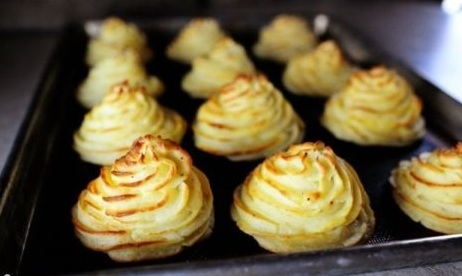
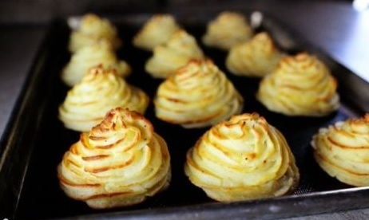

Приготування картопляних герцогинь.
Крок 1: Готуємо пюре.
Беремо червоний картопля.Для варіння і подальшого приготування пюре, а особливо картопляних герцогинь, краще всього підходить картопля червоних сортів. Його-то ми і використовуємо в даному рецепті.Промиваємо картоплини проточною водою, очищаємо від шкірки і ріжемо на шматки товщиною 4 сантиметри. Шматочки кидаємо в каструлю з холодною водою і доводимо до кипіння на сильному вогні. Додаємо 2 чайні ложки солі, її акуратно розмішуємо у воді, намагаючись не зачепити картоплю. Через 20 хвилин перевірте готовність картоплі, він вже повинен розм'якнути. Зливаємо воду, а картопля перекладаємо в чашу блендера. Готуємо пюре в блендеріЗбиваємо картопля блендером до однорідної маси, потім додаємо жирні вершки, половину вершкового масла, жовтки, чайну ложку солі і чорний перець. Перемішаємо пюре блендером 1-2 хвилини.
Крок 2: Формуємо і випікаємо картопляні герцогині.
Видавлюємо зірочки з пюре. Дістаємо з духовки деко, і вмикаємо вогонь, щоб прогріти духовку до 200 градусів. Застеляємо деко папером для випічки, щоб герцогині не пригоріли. Кондитерський шприц або кулінарний мішечок заповнюємо картопляним пюре і видавлюємо його на деко у вигляді невеликих зірочок. Відстань між герцогинями залишаємо 3 сантиметри. Розтоплюємо решту вершкового масла, і з допомогою пензлика наносимо його на кожну герцогиню. Герцогині готовіВипікаємо картопляні герцогині до золотистого кольору, в нагрітій духовці на середньому вогні, приблизно 20-25 хвилин.
Крок 3: Подаємо картопляні герцогині.
Подаємо картопляні герцогині як гарнірРум'яні картопляні герцогині подають теплими як гарнір до страви з м'яса або риби. Щоб додати аромату, можна посипати їх рубаною петрушкою. Смачне прикраса для Вашого столу готово!
Приємного апетиту!
«Повернутись